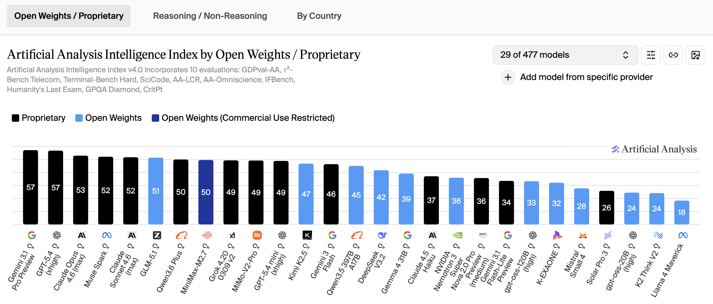
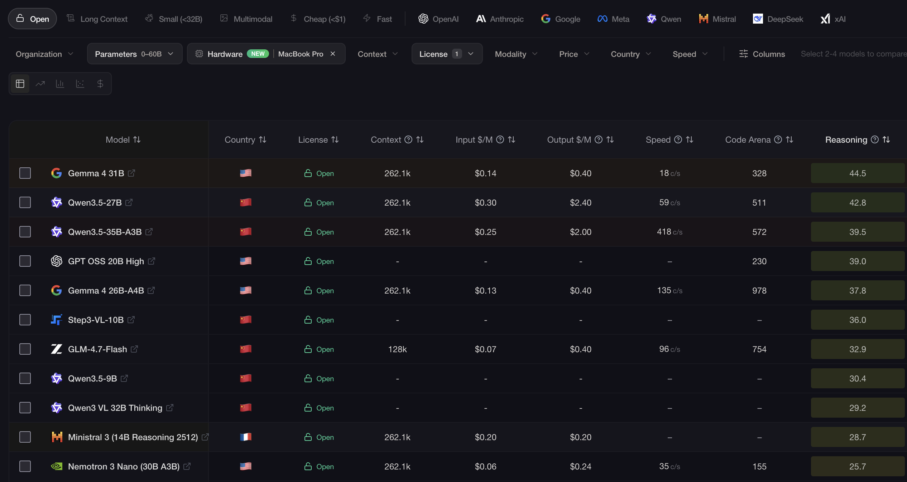
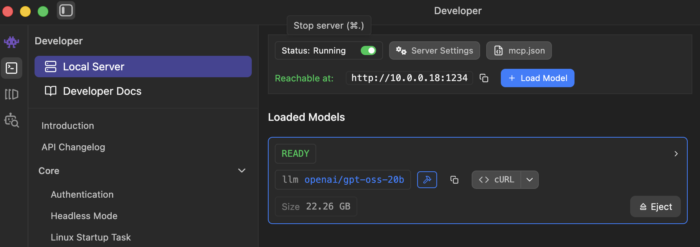
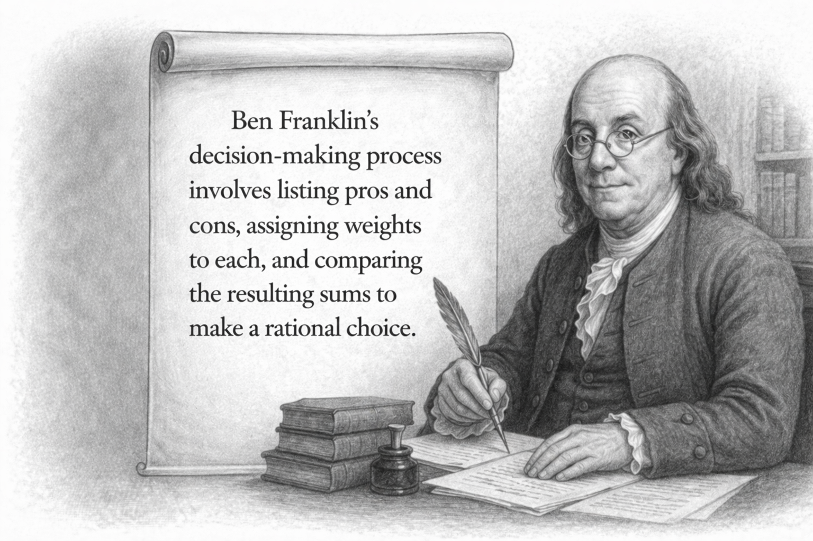
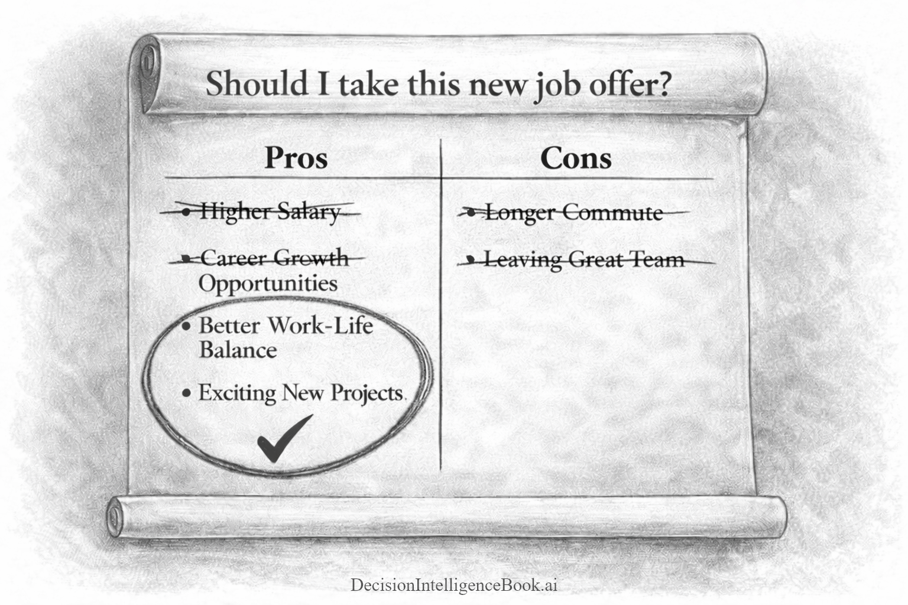

Chapter 3D
Private AI Decision Intelligence
 Workshop (AI Extensions) - Private AI Decision Intelligence
Workshop (AI Extensions) - Private AI Decision Intelligence
Decision Intelligence applied in this module:
- Using OSS (open-source / open-weight) reasoning models, running locally, to optimize the decision approach
- Decision Scenario: Use a decision framework (Ben Franklin's Pro & Con List) to create a decision plan
- How Tom Brady used the Ben Franklin framework to select the Tampa Bay Buccaneeers quarterback position
- Improving Decision Intelligence process by explicitly providing decision frameworks and additional context
A recommended enterprise pattern is to scale Artificial Intelligence strategy with three key pillars:
- Commercial AI (OpenAI and other proprietary Generative AI providers)
- Open Source (OpenWeight) AI (open-source AI providers)
- Vendor and Partner AI (i.e. existing company HR Software, contract software that inlcudes AI functionality)
📝 Note: There is a technical difference between Open Source and Open Weight models. Open Weight models generally only provide you the weights & biases file(s) with a friendly open source license. Open Source models extend this, by including the pre/post training data, training scripts and sometimes the training checkpoints. Those three additions allow the models to be fully retrained by anyone. More info can be found here: https://opensource.org/ai/open-weights. For this workshop, we will use the term open source more loosely. In a great majority of the cases most organizations just want two things: the weights & biases file(s) and a friendly useage license. Certain organizations require the full OSS model assets for risk management. For example, if an OSS provider stops being able to iterate and provide updates, an organization can use the full OSS model assets (data, scripts etc.) to re-build the model themselves. In most situations, while the full open source model assets are nice to have, they offer minimal value and open-weight models suffice.
These three pillars (listed above) strategically form AI capability and capacity in what I like to refer to as the "Generative AI Brain". This is illustrated below with examples. Most organizations scale their AI investments with Commercial AI providers, such as: OpenAI, Anthropic or Google. However, some organizations prefer to have more governance controls over their AI and prefer open-source alternatives. For hobby consumers, open source translates to no AI token counting requirements for APIs and very high privacy. Note that there are some commercial providers like Meta, Microsoft, Cohere that provide open-source models as well. Therefore, they span into both the commercial and open-source pillars. Finally in the third pillar, an organization may have an existing relationship with a vendor/partner that has their own AI integrations. For example, Adobe offers enterprise graphics design. If an organization consumes Adobe graphics design software, it is already leveraging Adobe's built-in Generative AI capabilities. Therefore, using Adobe software, rather building their own can make a lot of sense.
How does this all come together? Most developer AI frameworks (SDKs) work across all the pillars mentioned above. It allows almost any type of model (commercial or proprietary) and any APIs to be orchestrated to facilitate enterprise Decision Intelligence. This means that as you build the AI intelligence layer, you can compose this from various capabilities across these major tiers.
Open Source (OSS) models vary dramatically in size. They can have a small number of parameters/activated layers and perform great locally on your mobile device! They can also have a huge number parameters that rivals commercial AI LLMs.
In the cases where OSS models have a small number of parameters, they are are considered SLMs (Small Language Models) with parameters generally below the ~30 Billion parameter threshhold. This allows most of these models to run comfortably on commodity hardware, making sophisticated AI available event to personal users. While these models certainly may lack the general knowledge breadth of frontier AI Large Language Models, SLMs make up for it by providing very specialized logic, math and reasoning capabilities. For example, an SLM only trained for a specific language (English) and a certain domain (legal industry) can include the specific training information for the english legal domain. Therefore, it can be offered as a much more compact model with many less parameters, by stripping out other languages and other general unrelated knowledge.
In the cases where OSS models have a large number of parameters, they can perform just as well as commercial models! OSS models with large parameters require enterprise commerical hardware to execute at scale. As of mid-2026, a trend has emerged where open-source models are quickly catching up to the minimal/baseline functionality of frontier models. For example, if you asked a frontier model and a quality OSS model to solve a complex physics simulation, only the frontier model could solve it. Many tasks like these are now being solved easily by OSS models.
Below is an image from an independent AI benchmarking site ArtificialAnalysis.ai across proprietary and OSS models. Notice that almost half of the Top 30 performing models are open weight models (blue):

For this workshop, we will be working primarily with SLM family of OSS models, because not everyone has H100 or B200 Nvidia GPUs to deploy huge parameter models. Therefore, if you have a gaming workstation or a recent laptop with a GPU, these exercises should perform well. However, as you will see these smaller models are quite good. As of April 2026, OpenAI's gpt-oss-20 or Gemma 4 open-source reasoning models performs about 2 generations back of frontier LLM performance. Keep in mind these are general 20B & 26B parameter OSS models. This model can be fine-tuned or mid-trained and can perform much better. For current LM statistics, please visit: https://llm-stats.com/leaderboards/open-llm-leaderboard.

Step 1 - Get Started with LMStudio and Local Open Source AI Models¶
Steps to get started:
- Download & install the latest LMStudio version: https://lmstudio.ai/ (Windows, Mac or Linux)
- Run the LMStudio studio application.
- In the LMStudio application, search for Gemma 4 12B GGUF (MLX is optimized on macOS) in the "Discover" section of LMStudio. A variety of Gemma options that are official and unofficial from hobbyists will appear. Typically, selecting the official model with the most downloads will provide the best results. In this case, you can be safe by selecting the official Google provider. You can select different quantizations of the model, to optimize the performance.
- In the experiment below, the 12B parameter model is being used with 8bit quantization (Q8_0) is selected. LMStudio will inspect your hardware and let you know which quantized version of the model(s) is optimal for your hardware. Even though computers with commodity graphics cards can run these models well locally, you still need to ensure the models weights/parameters will fit into the memory of the model. For example, laptops such as the Macbook Pro with Neural Engine can run LMStudio local models using unified memory. This allows more of the model to be placed into the memory of the local worksation/laptop.
- Start the LMStudio Server with the Gemma 4 12B model loaded. This will start a local REST endpoint with a URI similar to http://10.0.0.18:1234/v1
- The LMStudio local server does not have default security, you can simply check by navigating to this link in any browser to check if a model is loaded: http://10.0.0.18:1234/v1/models in the web browser.

Step 2 - Initialize ChatClient using OpenAI libraries¶
Execute the next cell to:
- Use the Configuration Builder to use the local LMStudio Server
- Use the local API configuration to build an API compatible OpenAIClient
- The API Compatible OpenAIClient can be converted to a Microsoft.Extensions.AI ChatClient abtraction
- Note: Notice there is no security being passed in and it is simply a URL
// Import the required NuGet configuration packages
#r "nuget: Microsoft.Extensions.Configuration, 10.0.9"
#r "nuget: Microsoft.Extensions.Configuration.Json, 10.0.9"
#r "nuget: System.Text.Json, 10.0.9"
using Microsoft.Extensions.Configuration.Json;
using Microsoft.Extensions.Configuration;
using System.IO;
using System;
// Load the configuration settings from the local.settings.json and secrets.settings.json files
// The secrets.settings.json file is used to store sensitive information such as API keys
var configurationBuilder = new ConfigurationBuilder()
.SetBasePath(Directory.GetCurrentDirectory())
.AddJsonFile("local.settings.json", optional: true, reloadOnChange: true)
.AddJsonFile("secrets.settings.json", optional: true, reloadOnChange: true);
var config = configurationBuilder.Build();
// IMPORTANT: Set your local connection in secrets.settings.json.
// This is required to connect to your local LLM instance (e.g., Ollama, LM Studio, etc.)
var localAIEndpoint = config["LocalAI:Endpoint"]; // local LLMs do not require an API key
var localAIAPIKey = config["LocalAI:APIKey"]; // this can be localhost or an IP address
var localAIModelDeploymentName = config["LocalAI:ModelDeploymentName"]; // Local AI Model Name. Another Option: "openai/gpt-oss-20b";
// Display the loaded configuration settings to verify they were loaded correctly
Console.WriteLine($"Local AI Endpoint: {localAIEndpoint}");
Console.WriteLine($"Local AI API Key: {localAIAPIKey}");
Console.WriteLine($"Local AI Model Deployment Name: {localAIModelDeploymentName}");
// Install the required AI packages
#r "nuget: Microsoft.Extensions.DependencyInjection, 10.0.9"
#r "nuget: Microsoft.Extensions.AI, 10.7.0"
#r "nuget: Microsoft.Extensions.AI.Abstractions, 10.7.0"
#r "nuget: Microsoft.Extensions.AI.OpenAI, 10.7.0"
#r "nuget: OpenAI, 2.11.0"
using Microsoft.Extensions.AI;
using OpenAI;
using System.ClientModel; // used by APiKeyCredential class
var apiCredentials = new ApiKeyCredential(localAIAPIKey);
var openAIClientOptions = new OpenAIClientOptions
{
Endpoint = new Uri(localAIEndpoint)
};
// Create a local AI client
var localAIClient = new OpenAIClient(apiCredentials, openAIClientOptions);
// Wrap the OpenAI-compatible chat client with the Microsoft.Extensions.AI abstraction.
IChatClient localAIChatClient = localAIClient
.GetChatClient(localAIModelDeploymentName)
.AsIChatClient();
Step 3 - Open Source AI with Decision Intelligence¶
The OpenAI .NET library allows one to interact with any API service that adheres to the OpenAI specifications. This can be the ChatCompletions API or the newer Responses API specs. Notice the method to add LMStudio capability was simply enabled via the GetChatClient method converted to a chat client using the AsIChatClient method above.
Note:
- OpenAI Prompt Execution Settings (Temperature, TopK) are the same in LMStudio as they are for OpenAI and Azure OpenAI
- OSS models have specific model cards identifying best practice configuration settings
Execute the cell below about decision factors for a investment property.
// Define the system prompt for the Decision Intelligence assistant
// Note: For an enterprise-grade Decision Intelligence assistant, you would want to provide more detailed instructions and guidelines.
var systemDecisionPrompt = """
You are a Decision Intelligence assistant.
Help the user explore options, evaluate tradeoffs, reason through uncertainty, solve problems,
and apply systems thinking to personal, professional, strategic, and operational decisions.
-------------------------------
Output Formatting Instructions:
When generating Markdown, do not use any headings higher than ###.
Avoid # and ## headers. Use only ###, ####, or lower-level headings if necessary.
All top-level section headers should start at ### or lower.
Never use ---, ***, or ___ for horizontal lines. There should be no horizontal lines in the output.
For separation, use extra extra spacing. Do not any render horizontal lines.
Format the response using only a Markdown table. Only return a Markdown table.
Do not enclose the table in triple backticks.
""";
// Create a Decision Intelligence prompt on the topic of purchasing a secondary home as an investment property
// Provide detailed decision-making criteria for evaluating the investment decision
var simpleDecisionPrompt = """
You are considering purchasing a secondary home as an investment property.
What key factors should you evaluate to ensure a sound investment decision, including financial,
market, and property-specific considerations?
Outline the critical steps and criteria for assessing location, potential rental income,
financing options, long-term property value, and associated risks.
""";
List<ChatMessage> chatMessages =
[
new(ChatRole.System, systemDecisionPrompt),
new(ChatRole.User, simpleDecisionPrompt),
];
// Define reasoning options for the chat completion.
// Note: For speed optimization, reasoning effort is set to None.
var reasoningOptions = new ReasoningOptions
{
Effort = ReasoningEffort.None
};
// Note: Different OSS models have different capabilities and settings
// Gemma-4-26B Model Card Recommendations: https://huggingface.co/google/gemma-4-26B-A4B#1-sampling-parameters
ChatOptions chatOptions = new()
{
Reasoning = reasoningOptions
};
// Execute the chat messages through the Microsoft.Extensions.AI IChatClient API.
ChatResponse chatHistoryResponse = await localAIChatClient.GetResponseAsync(chatMessages, chatOptions);
var chatHistoryResponseText = chatHistoryResponse.Text;
// Display the response string as Markdown
chatHistoryResponseText.DisplayAs("text/markdown");
Step 4 - Open Source AI with Decision Intelligence (Advanced)¶

Advanced Prompt Engineering techniques can be applied to OSS (open-source / open-weight) models as well. In the example below a more advanced reasoning decision prompt will be used to provide additional instructions to the GenAI model. Reasoning models do a nice job in approaching the problem with an inner monologue, however you can provide additional instructions for the model to consider as they are thinking about an approach.
// Define the system prompt for the Decision Intelligence assistant
var systemDecisionPrompt = """
You are a Decision Intelligence assistant.
Help the user explore options, evaluate tradeoffs, reason through uncertainty, solve problems,
and apply systems thinking to personal, professional, strategic, and operational decisions.
Provide responses that are structured, logical, and thorough.
Aim to improve the user's judgment rather than make choices for them.
Be balanced, analytical, and pragmatic.
Adapt depth and complexity to the user's context.
When the situation is ambiguous, ask targeted clarifying questions or state reasonable assumptions explicitly.
When multiple valid paths exist, present them fairly and explain when each would make sense.
-------------------------------
Output Formatting Instructions:
When generating Markdown, do not use any headings higher than ###.
Avoid # and ## headers. Use only ###, ####, or lower-level headings if necessary.
All top-level section headers should start at ### or lower.
Never use ---, ***, or ___ for horizontal lines. There should be no horizontal lines in the output.
For separation, use extra extra spacing. Do not any render horizontal lines.
Format the response using only a Markdown table. Only return a Markdown table.
Do not enclose the table in triple backticks.
""";
// Create a Decision Intelligence prompt on the topic of purchasing a secondary home as an investment property
// Use Chain of Thought to prompt the OSS model
// Use the Minto Pyramid to communicate the decision
var advancedDecisionPrompt = """
You are considering purchasing a secondary home as an investment property.
Before providing any answer, in your reasoning process consider the following:
Understand the Problem: Carefully read and understand the user's question or request.
Break Down the Reasoning Process: Outline the steps required to solve the problem or respond to the request logically and sequentially. Think aloud and describe each step in detail.
Always aim to make your thought process transparent and logical.
Explain Each Step: Provide reasoning or calculations for each step, explaining how you arrive at each part of your answer.
Provide structured, logical, and comprehensive advice.
Arrive at the Final Answer: Only after completing all steps, provide the final answer or solution.
Review the Thought Process: Double-check the reasoning for errors or gaps before finalizing your response.
Communicate the final decision using the Minto Pyramid Principle.
""";
List<ChatMessage> chatMessagesDecision =
[
new(ChatRole.System, systemDecisionPrompt),
new(ChatRole.User, advancedDecisionPrompt),
];
// Define reasoning options for the chat completion.
// Note: For speed optimization, reasoning effort is set to None.
var reasoningOptions = new ReasoningOptions
{
Effort = ReasoningEffort.None
};
// Note: Different OSS models have different capabilities and settings
// Gemma-4-26B Model Card Recommendations: https://huggingface.co/google/gemma-4-26B-A4B#1-sampling-parameters
ChatOptions chatOptions = new()
{
Temperature = 1.0f,
TopP = 0.95f,
TopK = 64,
Reasoning = reasoningOptions
};
// Execute the chat messages through the Microsoft.Extensions.AI IChatClient API.
ChatResponse chatHistoryAdvancedDecisionPromptResponse = await localAIChatClient.GetResponseAsync(chatMessagesDecision, chatOptions);
var chatHistoryAdvancedDecisionPromptText = chatHistoryAdvancedDecisionPromptResponse.Text;
// Render the response string as Markdown
chatHistoryAdvancedDecisionPromptText.DisplayAs("text/markdown");
// Add the assistant's response to the chat history
// This allows you to maintain the context of the conversation for future messages
chatMessages.Add(new ChatMessage(ChatRole.Assistant,chatHistoryAdvancedDecisionPromptText));
Step 5 - Open Source AI with The Ben Franklin Decision Framework¶
📜 "By failing to prepare, you are preparing to fail."
-- Ben Franklin (Founding Father of the United States, inventor, godfather of Decision Science)

Tom Brady's use of a Decision Framework¶

Tom Brady's decision to join the Tampa Bay Buccaneers in 2020 marked a significant in his legendary NFL career. After 20 seasons and six Super Bowl championships with the New England Patriots, Brady became a free agent and chose to sign with the Bucs. How did he arrive at this decision? On the Fox broadcast on 09.29.2024, while covering the Buccaneers vs Philadelphia Eagles game, Tom Brady described how he arrived at this decision.
In the screenshot below, Tom Brady is holding up some small paper cards he is showing the audience of the broadcast. Brady mentioned he wrote down the personal decision criteria that was important and how each team compared in that criteria (salary, weather etc). He used this to select the Tampa Bay Buccaneers as his team, where he went on to win a Super Bowl in his first year there! After 250 years since it's inception, Tom Brady used the "Ben Franklin Decision Framework" to decide where to play NFL quaterback!!
Steps for Ben Franklin's Decision Framework¶
Below are the steps Ben Franklin recommends when making a decision, which he called his "Decision Making Method of Moral Algebra":
- Frame a decision that has two options (Yes or a No)
- Divide an area into two competing halves: a "Pro" side and "Con" side
- Label the top of one side "Pro" (for) and the other "Con" (against)
- Under each respective side, over a period of time (Ben Franklin recommended days, this could be minutes) write down various reasons/arguments that support (Pro) or are against (Con) the decision
- After spending some time thinking exhaustively and writing down the reasons, weight the different Pro and Con reasons/arguments
- Determine the relative importance of each reason or argument. This is done by taking reasons/arguments that are of similar value (weight) and crossing them off of the other competing half. Multiple reasons can be combined from one side to form a "subjective" value (weight) to balance out the other half. (For example, two medium "Pro" reasons might add up to an equal value of a single important "Con" reason)
- The side with the most remaining reasons is the option one should select for the decision in question
Learn more about Ben Franklin's Decision Framework: https://medium.com/@bartczernicki/make-great-decisions-using-ben-franklins-decision-making-method-c7fb8b17905c

Decision Scenario - Should a Family Decide to Take a Luxury Vacation?¶
Should a family take a luxury family vacation this year? Just like Brady mapped out whether joining the Bucs would satisfy his key personal and professional goals, you can list the factors that matter most for your family—budget, timing, destination climate, activities for the kids—and lay them out on your own “decision cards.” Weigh each component carefully, just as Brady weighed his NFL future. Because if it worked to land Brady in Tampa Bay (where he won yet another Super Bowl), imagine what it can do for a family’s dream getaway.
📝 Note: These family decisions can be highly personal. Imagine making a decision on a medical issue or a life-changing career event. You may not want that information being served by public AI. This is where having a local open-source/open-weight AI system to serve these decisions can make a whole lot of sense.
// Define the system prompt for the Decision Intelligence assistant
var systemDecisionPrompt = """
You are a Decision Intelligence assistant.
Help the user explore options, evaluate tradeoffs, reason through uncertainty, solve problems,
and apply systems thinking to personal, professional, strategic, and operational decisions.
Provide responses that are structured, logical, and thorough.
Aim to improve the user's judgment rather than make choices for them.
Be balanced, analytical, and pragmatic.
Adapt depth and complexity to the user's context.
When the situation is ambiguous, ask targeted clarifying questions or state reasonable assumptions explicitly.
When multiple valid paths exist, present them fairly and explain when each would make sense.
-------------------------------
Output Formatting Instructions:
When generating Markdown, do not use any headings higher than ###.
Avoid # and ## headers. Use only ###, ####, or lower-level headings if necessary.
All top-level section headers should start at ### or lower.
Format the response using only a Markdown table. Only return a Markdown table.
Do not enclose the table in triple backticks.
""";
var benFranklinLuxuryVacationDecisionPrompt = """
Apply the Ben Franklin Decision-Making Framework (Pro and Con list) to evaluate whether or not to take a luxury family vacation.
List at most 5 pros and at most 5 cons to help the user make an informed decision.
""";
List<ChatMessage> chatMessagesLuxuryVacationDecision =
[
new(ChatRole.System, systemDecisionPrompt),
new(ChatRole.User, benFranklinLuxuryVacationDecisionPrompt),
];
// Define reasoning options for the chat completion.
// Note: For speed optimization, reasoning effort is set to None.
var reasoningOptions = new ReasoningOptions
{
Effort = ReasoningEffort.None
};
// Note: Different OSS models have different capabilities and settings
// Gemma-4-26B Model Card Recommendations: https://huggingface.co/google/gemma-4-26B-A4B#1-sampling-parameters
ChatOptions chatOptions = new()
{
Temperature = 1.0f,
TopP = 0.95f,
TopK = 64,
Reasoning = reasoningOptions
};
// Execute the chat messages through the Microsoft.Extensions.AI IChatClient API.
ChatResponse chatHistoryAdvancedDecisionPromptResponse = await localAIChatClient.GetResponseAsync(chatMessagesLuxuryVacationDecision, chatOptions);
var chatHistoryAdvancedDecisionPromptText = chatHistoryAdvancedDecisionPromptResponse.Text;
// Render the response string as Markdown
chatHistoryAdvancedDecisionPromptText.DisplayAs("text/markdown");
// Add the assistant's response to the chat history
// This allows you to maintain the context of the conversation for future messages
chatMessages.Add(new ChatMessage(ChatRole.Assistant,chatHistoryAdvancedDecisionPromptText));
Improving the Ben Franklin's Decision Framework with Local AI¶
For those familiar with the Ben Franklin decision framework, the output from the AI model above may not be exactly what most would anticipate. The Ben Franklin framework could be partially understood by the AI process nor fully applied. Open-Source GenAI models that have a small amount of parameters (< ~27 billion parameters) may not have all the inherent Decision Intelligence knowledge "trained" into the model. The exception being domain-specific models that are specifically trained on data sets for that domain. These domain-specific models can fill their "limited knowledge" with information that is pertinent to the tasks, while maintaining a small amount of parameters. Therefore, you could train small AI models that specialize in Decision Intelligence.
One simple way to improve the outcome is to provide the explicit steps of the "Ben Franklin Decision Framework" into the prompt context. This basically provides the instructions of the decision framework directly to the model; regardless if the GenAI model was trained with decision framework data. By doing this extra explicit step, there is no ambiguity for the AI model how to approach the decision process.
In the example below, the prompt context is provided with the Ben Franklin Decision Framework steps. Contrast this with the example above, where the decision recommendation is not clear.
// Define the system prompt for the Decision Intelligence assistant
var systemDecisionPrompt = """
You are a Decision Intelligence assistant.
Help the user explore options, evaluate tradeoffs, reason through uncertainty, solve problems,
and apply systems thinking to personal, professional, strategic, and operational decisions.
Provide responses that are structured, logical, and thorough.
Aim to improve the user's judgment rather than make choices for them.
Be balanced, analytical, and pragmatic.
Adapt depth and complexity to the user's context.
When the situation is ambiguous, ask targeted clarifying questions or state reasonable assumptions explicitly.
When multiple valid paths exist, present them fairly and explain when each would make sense.
-------------------------------
Output Formatting Instructions:
When generating Markdown, do not use any headings higher than ###.
Avoid # and ## headers. Use only ###, ####, or lower-level headings if necessary.
All top-level section headers should start at ### or lower.
Never use ---, ***, or ___ for horizontal lines. There should be no horizontal lines in the output.
For separation, use extra extra spacing. Do not any render horizontal lines.
Format the response using only a Markdown table. Only return a Markdown table.
Do not enclose the table in triple backticks.
""";
var explicitBenFranklinDecisionPrompt = """
Apply the following steps IN ORDER of the Ben Franklin Decision Framework to the Question below:
1) Frame a decision that has two options (Yes or a No)
2) Divide an area into two competing halves: a "Pro" side and "Con" side
3) Label the top of one side "Pro" (for) and the other "Con" (against)
4) Under each respective side, list a maximum of 5 reasons or arguments for each option. If there less than 5 reasons, only list the actual number of reasons there are for each side. Do not list filler reasons to reach 5 if there are not actually 5 reasons for that side.
5) Consider the weight of each reason or argument. This is done by taking reasons/arguments that are of similar value (weight) and crossing them off of the other competing half. Multiple reasons can be combined from one side to form a "subjective" value (weight) to balance out the other half. (For example, two medium "Pro" reasons might add up to an equal value of a single important "Con" reason)
6) Determine the relative importance of each reason or argument. This is done by taking reasons/arguments that are of similar value (weight) and crossing them off of the other competing half. Multiple reasons can be combined from one side to form a "subjective" value (weight) to balance out the other half. (For example, two medium "Pro" reasons might add up to an equal value of a single important "Con" reason)
7) The side with the most remaining reasons is the option one should select for the decision in question
IMPORTANT: ALWAYS recommend a decision based on the side with the most remaining reasons, even if the reasons are of lesser value than the other side!
Answer the Question: Should I take a luxury family vacation?
""";
List<ChatMessage> chatMessagesLuxuryVacationDecisionImproved =
[
new(ChatRole.System, systemDecisionPrompt),
new(ChatRole.User, explicitBenFranklinDecisionPrompt),
];
// Define reasoning options for the chat completion.
// Note: For speed optimization, reasoning effort is set to None.
var reasoningOptions = new ReasoningOptions
{
Effort = ReasoningEffort.None
};
// Note: Different OSS models have different capabilities and settings
// Gemma-4-26B Model Card Recommendations: https://huggingface.co/google/gemma-4-26B-A4B#1-sampling-parameters
ChatOptions chatOptions = new()
{
Temperature = 1.0f,
TopP = 0.95f,
TopK = 64,
Reasoning = reasoningOptions
};
// Execute the chat messages through the Microsoft.Extensions.AI IChatClient API
ChatResponse chatLuxuryVacationDecisionImprovedResponse = await localAIChatClient.GetResponseAsync(chatMessagesLuxuryVacationDecisionImproved, chatOptions);
var chatLuxuryVacationDecisionImprovedResponseText = chatLuxuryVacationDecisionImprovedResponse.Text;
// Render the response string as Markdown
chatLuxuryVacationDecisionImprovedResponseText.DisplayAs("text/markdown");
The GenAI model may or may not recommend a luxury vacation depending on the executed run. It's decision response is highly generic and isn't grounded on personal information that can influence the decision recommendation. This can be dramatically improved further! Imagine if the GenAI model had access to: your finances, current stress level, the last time you took a vacation, any upcoming major purchases, family dynamic?!
In the optimized decision example below, additional context is provided with that information. Notice how it changes the the Pro and Con list.
Just like Tom Brady, the AI could craft a Pro and Con list specific and personalized to your scenario!
// Define the system prompt for the Decision Intelligence assistant
var systemDecisionPrompt = """
You are a Decision Intelligence assistant.
Help the user explore options, evaluate tradeoffs, reason through uncertainty, solve problems,
and apply systems thinking to personal, professional, strategic, and operational decisions.
Provide responses that are structured, logical, and thorough.
Aim to improve the user's judgment rather than make choices for them.
Be balanced, analytical, and pragmatic.
Adapt depth and complexity to the user's context.
When the situation is ambiguous, ask targeted clarifying questions or state reasonable assumptions explicitly.
When multiple valid paths exist, present them fairly and explain when each would make sense.
-------------------------------
Output Formatting Instructions:
When generating Markdown, do not use any headings higher than ###.
Avoid # and ## headers. Use only ###, ####, or lower-level headings if necessary.
All top-level section headers should start at ### or lower.
Never use ---, ***, or ___ for horizontal lines. There should be no horizontal lines in the output.
For separation, use extra extra spacing. Do not any render horizontal lines.
Format the response using only a Markdown table. Only return a Markdown table.
Do not enclose the table in triple backticks.
""";
// Try changing the background information to see how it affects the decision-making process
var gatheredIntelligenceFamilyBackground = """
GATHERED INTELLIGENCE FAMILY BACKGROUND USED AS ONLY DECISION DRIVERS:
1) You have a large mortgage remaining on your primary home.
2) You have been working long hours and have not taken a vacation in over a year.
3) You have received a recent promotion (pay raise with a large bonus coming in a few months).
4) Your car is finishing its lease and will need to be replaced soon.
5) The kids are about to start college soon.
6) You have had some recent medical expenses that you are unsure insurance will cover.
""";
// Try to adjust the specificity of the decision-making criteria to see how it affects the decision-making process
var explicitBenFranklinDecisionPrompt = """
Apply the following steps IN ORDER of the Ben Franklin Decision Framework to the Question below:
1) Frame a decision that has two options (Yes or a No)
2) Divide an area into two competing halves: a "Pro" side and "Con" side
3) Label the top of one side "Pro" (for) and the other "Con" (against)
4) Under each respective side, list a maximum of 5 reasons or arguments for each option. If there less than 5 reasons, only list the actual number of reasons there are for each side. Do not list filler reasons to reach 5 if there are not actually 5 reasons for that side.
5) Consider the weight of each reason or argument. This is done by taking reasons/arguments that are of similar value (weight) and crossing them off of the other competing half. Multiple reasons can be combined from one side to form a "subjective" value (weight) to balance out the other half. (For example, two medium "Pro" reasons might add up to an equal value of a single important "Con" reason)
6) Determine the relative importance of each reason or argument. This is done by taking reasons/arguments that are of similar value (weight) and crossing them off of the other competing half. Multiple reasons can be combined from one side to form a "subjective" value (weight) to balance out the other half. (For example, two medium "Pro" reasons might add up to an equal value of a single important "Con" reason)
7) The side with the most remaining reasons is the option one should select for the decision in question
IMPORTANT: ALWAYS recommend a decision based on the side with the most remaining reasons, even if the reasons are of lesser value than the other side!
Answer the Question: Should I take a luxury family vacation?
""";
List<ChatMessage> chatMessagesLuxuryVacationDecisionImprovedWithGatheredIntelligence =
[
new(ChatRole.System, systemDecisionPrompt),
new(ChatRole.Assistant, gatheredIntelligenceFamilyBackground),
new(ChatRole.User, explicitBenFranklinDecisionPrompt),
];
// Define reasoning options for the chat completion.
// Note: For speed optimization, reasoning effort is set to None.
var reasoningOptions = new ReasoningOptions
{
Effort = ReasoningEffort.None
};
// Note: Different OSS models have different capabilities and settings
// Gemma-4-26B Model Card Recommendations: https://huggingface.co/google/gemma-4-26B-A4B#1-sampling-parameters
ChatOptions chatOptions = new()
{
Temperature = 0.2f,
Reasoning = reasoningOptions
};
// Execute the chat messages through the Microsoft.Extensions.AI IChatClient API
ChatResponse chatLuxuryVacationDecisionImprovedWithGatheredIntelligenceResponse =
await localAIChatClient.GetResponseAsync(chatMessagesLuxuryVacationDecisionImprovedWithGatheredIntelligence, chatOptions);
var chatLuxuryVacationDecisionImprovedWithGatheredIntelligenceResponseText = chatLuxuryVacationDecisionImprovedWithGatheredIntelligenceResponse.Text;
// Render the response string as Markdown
chatLuxuryVacationDecisionImprovedWithGatheredIntelligenceResponseText.DisplayAs("text/markdown");
Notice how providing personal family background information changes the entire dynamic of the information used in the decision framework and how it influences the recommended decision. The decision process is more specific not only to the scenario, but also it provides contextual background information. This makes the decision process more personalized and potentially much more accurate!
Step 6 - Higher Reasoning Effort for High-Stakes Decisions¶
Let's assume that this a very high-stakes decision. In this case we would prefer to have the AI system spend more time on the decision. Let's turn reasoning on to see how this changes the answer.
// Define reasoning options for the chat completion.
// Note: For additional reasoning capabilities, reasoning effort is set to High
var reasoningOptions = new ReasoningOptions
{
Effort = ReasoningEffort.High,
};
// Note: Different OSS models have different capabilities and settings
// Gemma-4-26B Model Card Recommendations: https://huggingface.co/google/gemma-4-26B-A4B#1-sampling-parameters
ChatOptions chatOptions = new()
{
Temperature = 0.2f, // Make the decision more deterministic based on the gathered intelligence background information
MaxOutputTokens = 8000,
Reasoning = reasoningOptions
};
List<ChatMessage> chatMessagesLuxuryVacationDecisionImprovedWithGatheredIntelligence =
[
new(ChatRole.System, systemDecisionPrompt),
new(ChatRole.Assistant, gatheredIntelligenceFamilyBackground),
new(ChatRole.User, "<|think|> " + explicitBenFranklinDecisionPrompt),
];
// Execute the chat messages through the Microsoft.Extensions.AI IChatClient API
ChatResponse chatLuxuryVacationDecisionImprovedWithGatheredIntelligenceResponse =
await localAIChatClient.GetResponseAsync(chatMessagesLuxuryVacationDecisionImprovedWithGatheredIntelligence, chatOptions);
var chatLuxuryVacationDecisionImprovedWithGatheredIntelligenceResponseText = chatLuxuryVacationDecisionImprovedWithGatheredIntelligenceResponse.Text;
// Extract the reasoning text from the chat response by filtering for TextReasoningContent and concatenating the text
string reasoningText = string.Join(
Environment.NewLine + Environment.NewLine,
chatLuxuryVacationDecisionImprovedWithGatheredIntelligenceResponse.Messages
.SelectMany(m => m.Contents)
.OfType<TextReasoningContent>()
.Select(rc => rc.Text)
.Where(t => !string.IsNullOrWhiteSpace(t)));
// Render the reasoning text as Markdown
("### **Reasoning Content:** ").DisplayAs("text/markdown");
reasoningText.DisplayAs("text/markdown");
// Render the response string as Markdown
("### **Decision Recommendation:** ").DisplayAs("text/markdown");
chatLuxuryVacationDecisionImprovedWithGatheredIntelligenceResponseText.DisplayAs("text/markdown");
Step 7 - Local Open Source AI & Cloud Commercial AI Providers¶
In a .NET architecture, you can include mutliple AI clients, that point to different AI services configured into a single service provider. This allows you to mix and match AI capabilities within a single service provider. This allows for hybrid AI workflows from a single service provider. For example:
- Capability Optimizations: Use SLMs for domain specific tasks and LLMs for broad & complex decision reasoning
- Decision Optimizations: Apply an (ensemble) decision self-consitency pattern from varying model architectures
- Capacity Optimizations: Splitting functions, plugins, personas or agents across different AI services
// Import the required NuGet configuration packages
#r "nuget: Microsoft.Extensions.AI.OpenAI, 10.7.0"
#r "nuget: Microsoft.Extensions.Configuration.Json, 10.0.9"
#r "nuget: Microsoft.Extensions.DependencyInjection, 10.0.9"
#r "nuget: OpenAI, 2.11.0"
using Microsoft.Extensions.AI;
using Microsoft.Extensions.Configuration.Json;
using Microsoft.Extensions.Configuration;
using Microsoft.Extensions.DependencyInjection;
using OpenAI;
using System.ClientModel;
using System.ComponentModel;
using System.IO;
// Load the configuration settings from the local.settings.json and secrets.settings.json files
// The secrets.settings.json file is used to store sensitive information such as API keys
var configurationBuilder = new ConfigurationBuilder()
.SetBasePath(Directory.GetCurrentDirectory())
.AddJsonFile("local.settings.json", optional: true, reloadOnChange: true)
.AddJsonFile("secrets.settings.json", optional: true, reloadOnChange: true);
var config = configurationBuilder.Build();
// Retrieve the configuration settings for the Azure OpenAI service
var azureOpenAIEndpoint = config["AzureOpenAI:Endpoint"];
var azureOpenAIAPIKey = config["AzureOpenAI:APIKey"];
var azureOpenAIModelDeploymentName = config["AzureOpenAI:ModelDeploymentName"];
// Retrieve the configuration settings for the local OpenAI-compatible service
var localApiKey = "not_needed_for_lmstudio_ollama_etc"; // local LLMs do not require an API key
var localUrl = "http://10.0.0.61:1234/v1/"; // this can be localhost or an IP address
var localModelName = "google/gemma-4-26b-a4b"; // Another Option: "openai/gpt-oss-20b";
// Create a service collection for dependency injection
var services = new ServiceCollection();
// Add Cloud AI Client Configuration
var apiKeyCredential = new ApiKeyCredential(azureOpenAIAPIKey);
var azureOpenAIClient = new OpenAIClient(
apiKeyCredential,
new OpenAIClientOptions
{
Endpoint = new Uri($"{azureOpenAIEndpoint!.TrimEnd('/')}/openai/v1")
});
var cloudChatClient = azureOpenAIClient.GetChatClient(azureOpenAIModelDeploymentName).AsIChatClient();
// Add Local OpenAI Client Configuration
var apiCredentials = new ApiKeyCredential(localApiKey);
var openAIClientOptions = new OpenAIClientOptions
{
Endpoint = new Uri(localUrl)
};
// Create a local AI client
var localAIClient = new OpenAIClient(apiCredentials, openAIClientOptions);
// Wrap the OpenAI-compatible chat client with the Microsoft.Extensions.AI abstraction
IChatClient localAIChatClient = localAIClient.GetChatClient(localModelName)
.AsIChatClient();
// Add both the cloud and local AI clients to the service collection for dependency injection
services.AddKeyedSingleton<IChatClient>("cloudAI", cloudChatClient);
services.AddKeyedSingleton<IChatClient>("localAI", localAIChatClient);
var provider = services.BuildServiceProvider();
// Reference either the cloud and local AI clients from the service provider
var cloud = provider.GetRequiredKeyedService<IChatClient>("cloudAI");
var local = provider.GetRequiredKeyedService<IChatClient>("localAI");